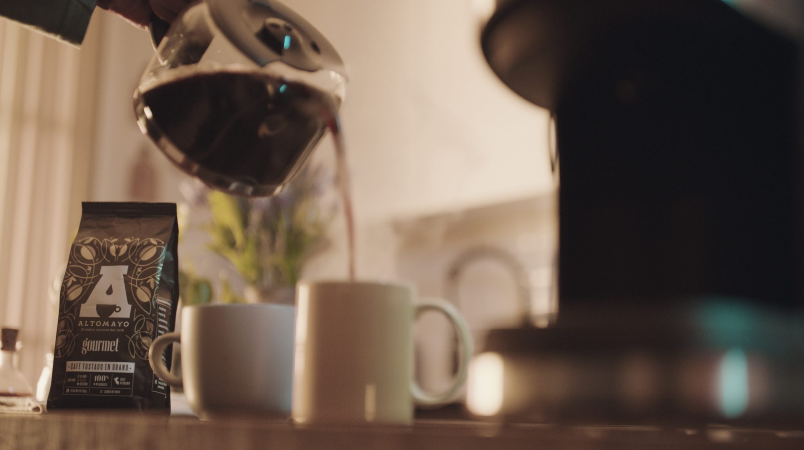

Descubre café Altomayo: presentaciones de café soluble o tostado
El café en el Perú está presente desde el siglo XVIII. Es parte de la tradición y de la economía del país. Café Altomayo y sus presentaciones son ejemplo de esa presencia necesaria en el país. Desde hace más de treinta años, la marca Altomayo acompaña a las familias peruanos con un alto compromiso con la calidad del café y con su sostenibilidad. Conoce sus diferentes líneas y presentaciones.
Café Altomayo:
presentaciones diversas
Para satisfacer a todos los consumidores, Altomayo ofrece su delicioso café en diferentes formatos, entre ellos:
- Stick o sachet: es café soluble, ideal para quienes buscan practicidad y preparan su bebida con rapidez.
- Frasco de vidrio: con un diseño elegante y perfecto para conservar el aroma y el sabor del café, esta presentación de café instantáneo ayuda a que se mantenga la calidad del producto.
- Lata: como una opción más grande y resistente para el día a día, puedes disfrutar de tu café soluble por más tiempo gracias a la conservación que implica esta presentación.
- Paquete: el formato tradicional de café, indicados para los que quieren engreír a sus familias, amigos e invitados. Este es el formato del café tostado y molido.
Café Altomayo y sus presentaciones: conoce sus diferentes líneas de producto
Las presentaciones de café Altomayo dependen también de la línea de producto que quieras disfrutar. Existen diferentes tipos de café para cada consumidor. ¡Descubre las diferencias!
También puedes prepararlo en cafetera eléctrica o hacer “café de manga o tela”. Es recomendable consumirlo en caliente para apreciar mejor sus sabores.
No dudes en experimentar con café Altomayo y sus presentaciones en café tostado y molido. El resultado que obtendrás es único y será una delicia para tu paladar. De igual forma, puedes usar tanto tu café soluble como tostado y molido para las más diversas recetas, desde postres hasta deliciosos cócteles. Altomayo tiene múltiples opciones para ti. Encuentra la presentación que más se adapte a tu gusto y elige café Altomayo, al hacerlo no solo disfrutas de un café con calidad, también apoyas a los caficultores peruanos y su esfuerzo por la caficultura sostenible.
Cafés solubles
Café Altomayo Gourmet
Es un café liofilizado, 100 % arábica, con un sabor y aroma intenso. Puedes obtenerlo en sachet, frasco y lata.Café Altomayo clásico
Es un café al alcance de cualquier hogar, el primero de los orígenes de Altomayo. Tiene cero azúcar o caramelina agregada y su sabor es más suave.Café Altomayo Premium
Café Altomayo y sus presentaciones sorprendieron al consumidor con un café de granos arábigos seleccionados, ofreciendo una experiencia sensorial única. El cuerpo, sabor y aroma de este café es 100 % calidad peruana.Café descafeinado
Con un sabor intenso, pero sin cafeína, es el café perfecto para consumir en la noche. También es liofilizado y está pensado para las personas que no pueden consumir cafeína.Café molido y tostado
Café clásico
Con un sabor y aroma balanceado, este café en tueste ligero, perfecto para consumir pasado, es una de las primeras presentaciones de café Altomayo. Viene en paquetes de 200 y 450 g, accesibles para toda la familia.Café Gourmet
Viene en presentación de paquete de granos 100 % arábica, con un tueste medio para dar un mejor sabor en taza. Es un café con tostado artesanal que permite resaltar aromas y sabores. Este café se caracteriza por su aroma intenso, con un cuerpo denso, característica que facilita que pueda prepararse en diferentes métodos como prensa o cafetera italiana. Puedes consumirlo en presentaciones de 200 y 450 g.

¿Cómo preparar las diferentes presentaciones de café Altomayo?
En toda preparación de café debes cuidar dos aspectos: el agua y su temperatura. Es ideal que el agua sea filtrada, con una temperatura entre los 90 y 96 grados Celsius. En el caso del café soluble sigue las indicaciones en cuanto a las cantidades, vierte tu café, remueve y disfruta. Para el café tostado y molido las opciones pueden ser más amplias:- Café Clásico: puede hacerse en la cafetera de la abuela, en el método gota a gota. Para medio litro de agua se pueden usar entre 40 y 50 gramos de café Altomayo clásico. El sabor en taza es suave y puedes combinarlo con leche.
- Café Gourmet tostado y molido: este café permite preparaciones en métodos como la prensa francesa, la cafetera italiana o moka, o el gota a gota. La molienda de café Altomayo Gourmet se presta también para preparar cafés fríos como el cold brew o el iced latte.